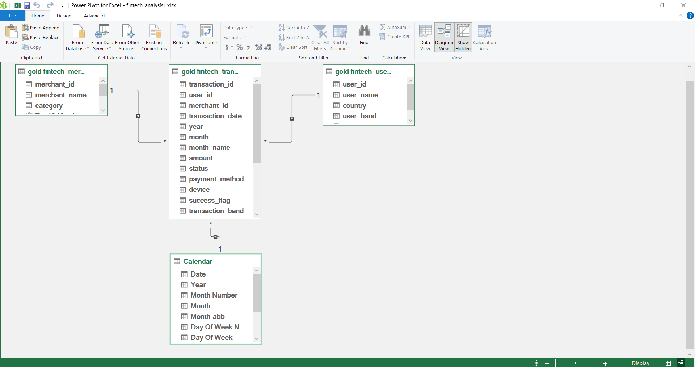
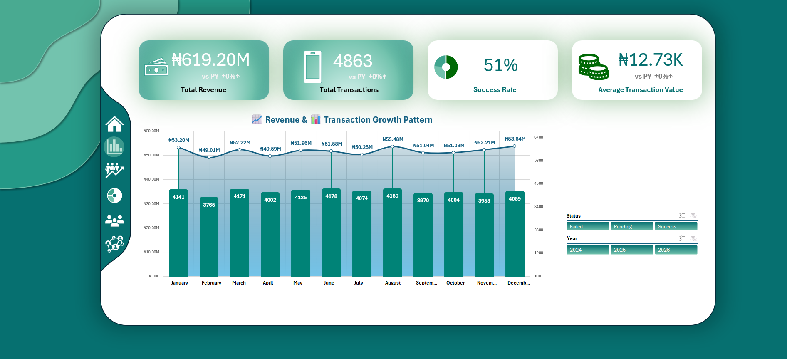
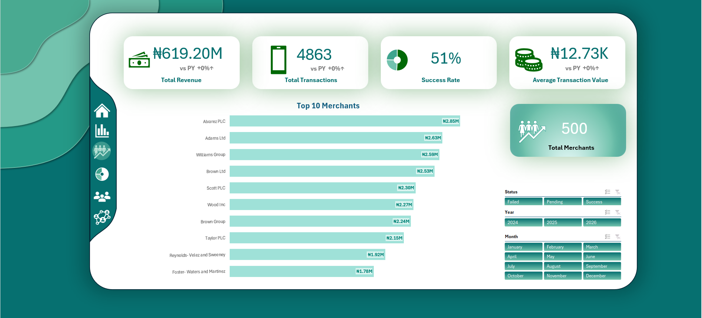
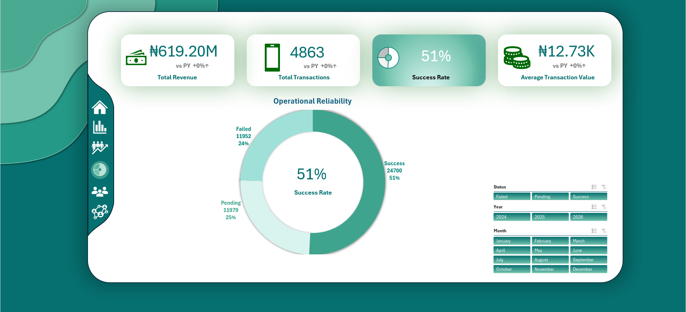
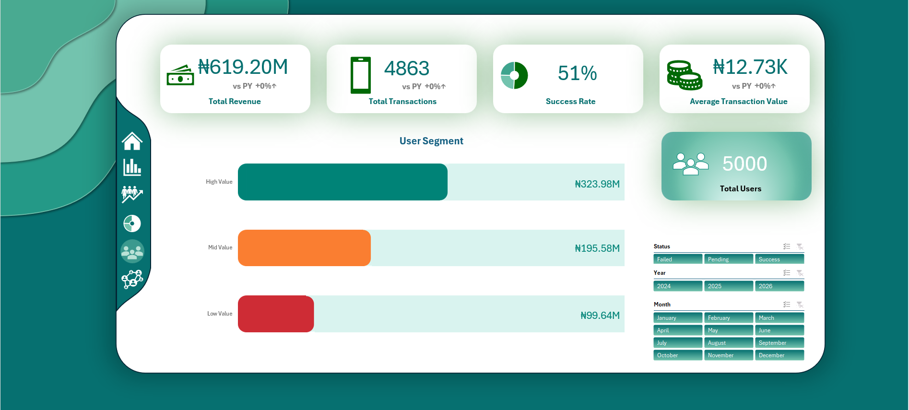
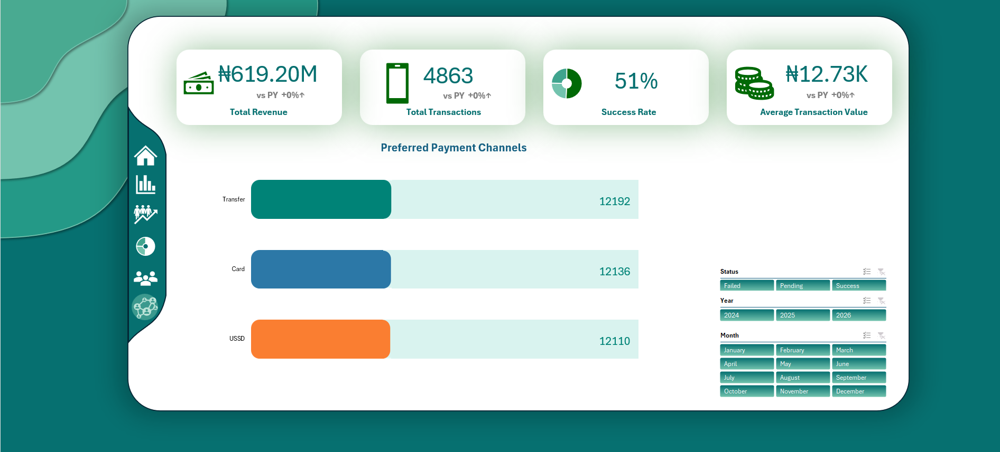

Project Details
This project focuses on analyzing fintech transaction data to uncover insights into revenue performance, operational efficiency and customer behaviour.
The workflow covered the full analytics pipeline:
- SQL-based ETL Datawarehouse Structure
- Data modeling using a star schema
- Power Pivot Integration
- Excel dashboard development with dynamic controls
The final deliverable is an interactive dashboard that enables stakehlders to monitor performance and identify business risks.
Business Problem
Despite consistent transaction activity, fintech platforms often struggle with:
- Low transaction success rates
- Revenue concentration among a few merchants
- Limited visibility into customer value distribution
- Difficulty tracking performance trends over time
Business Questions:
- How is the platform performing overall?
- Are transactions being sucessfully processed?
- What are the revenue trends over time?
- Which merchants drive the most revenue?
- How is revenue distributed across customers?
- What payment method are most used?
Data Preparation & Modelling
Data Architecture
The data architecture for this project follows three architectural layers Bronze, Silver and Gold layers

The Project Data Architecture.
Data Cleaning
Key transformations in the Silver layer:
- Removed currency symbols and standardized numeric formats
- Handled incosistent date formats
- Resolved duplicate transaction IDs
- Standardized categorical fields (status, payment method, merchants)
Data Modeling
A star schema was implemented
- Fact Tables: gold.fintech_transformation
- Dimension Tables: gold.fintech_users, gold.fintech_merchants, Calendar

This image shows the dataset structured Star Schema.
Excel Integration
- Loaded via SQL view
- Built measures Power Pivot
- Used GETPIVOTDATA for dynamic dasboard control
Dashboard Overview

This image shows the Dashboard Overview.
Download Excel Workbook for Interaction!Note: Make sure to add Power Pivot to the workbook before interacting with it.
Key Findings
Revenue Performance and Transaction Trends
- The platform generated over ₦619M in total revenue
- Revenue trend is relatively stable with no strong growth pattern
- Transaction volume aligns closely with revenue trends
- No major spikes or seasonality observed
- The business is operationally active but not experiencing significant growth.
- Growth opportunities may require strategic expansion or improved conversion rates

Revenue and Transaction Growth Pattern
Merchant Contribution
- There is healthy distribution of revenue among merchants.
- Revenue is not heavily dependent on small group of merchants, posing little to no business risk if key merchants churn

Top 10 Merchants
Operational Reliability
- Only 51% transactions are successful
- Almost half of all transactions fail or remain pending, indicating major inefficiencies in payment processing or system reliability

Operational Reliability
User Segmentation
- High-value customers contribute the largest share of revenue
- Revenue is concentrated among high-value users, making retention critical

User Segmentation
Payment Behavior
- No single payment method significantly outperform others, suggesting balanced adoption across channels

Preferred Payment Channels
Recommendations
Based on these findings, the business can implement the following actionable steps to improve operations:
- Improve Transaction Success: Investigate failure causes (network, payment gateway, validation errors)
- Retain High-Value Users: Introduce loyalty programs and offer incentives for repeat usage
- Drive Growth: Improve conversion rates (reduce failed/ pending transactions) and Expand customer acquisition strategies
- Study Barbara Heath's route assignment, her ₦2,563/KM is a model worth replicating across other drivers
Conclusion
The analysis reveal that while platform generates consistent revenue, operational inefficiencies and revenue concentration limit its growth potential.